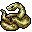
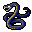
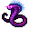
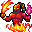
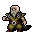

蛇穴 Snake Pit
英語版 CrawlWiki の記事「Snake Pit」(0.32 向け、2025-01-01 版)の翻訳です。原文の著者は編集履歴をご覧ください。
この記事は 0.32 の時点の内容で、最新の 0.34 とは違うところがあるかもしれません。
| 蛇穴の通路にはあらゆる種類の蛇が棲み、強力なナーガとサラマンダーの社会がある。
ひとつの迷宮には、蛇穴と蜘蛛の穴ぐらのうちどちらか一方の分岐しかない。 この分岐の入口は獣の棲み処の第2〜3階層にある。 この分岐は4階層ある。 この分岐には蛇行のルーンがある。 |
 蛇穴は獣の棲み処にある 4 階層の分岐だ。探索すれば蛇行のゾットのルーンが手に入るが、ここを住処とするたくさんのヘビやナーガとサラマンダーを相手にしなければならない。
蛇穴は獣の棲み処にある 4 階層の分岐だ。探索すれば蛇行のゾットのルーンが手に入るが、ここを住処とするたくさんのヘビやナーガとサラマンダーを相手にしなければならない。
蛇穴の入口は獣の棲み処:2〜3 にある。蛇穴が見つかったなら、そのゲームでは蜘蛛の穴ぐらは見つからない。
構造
蛇穴の構造はとても変化に富む。扉のある廊下でつながった小さな四角い部屋の集まりのこともあれば、ところどころに水場が点在する広々とした空間のこともある。いちばん近いのは迷宮だが、迷宮にあるような変わった構造のいくつかは出てこない。壁はほとんどが岩でできていて、掘り進められる。
蜘蛛の穴ぐらと違い、この分岐には店が生成される。ただし必ずあるわけではない。
蛇穴:4
蛇穴:4 には、石の壁に囲まれ厳重に守られたルーンのヴォールトが必ずある。蛇穴のほかの場所とはまるで違う作りだが、具体的な設計はゲームごとに変わる。このヴォールトは蛇穴:4 の大部分を占め、残りはたいてい単純な部屋と廊下でできている。
戦略
獣の棲み処のほかの分岐と同じく、見つけてすぐに蛇穴へ入るのはやめておいたほうがいい。その時点でここの脅威に対処できるキャラクターはほとんどいない。毒耐性は必須ではないが強くすすめる。rPois が無いなら、手に入るまで待つのも手だ。
蛇穴のモンスターの大半は、ナーガの群れ(足が遅い)とヘビ(足が速い)だ。
- ナーガは締めつけをしてくるので逃げにくい。しかもナーガはそれぞれ独自の能力を持っている。ナーガの戦士はあらゆる武器を使いこなすタフな近接攻撃の脅威で、ナーガの達人射手は打擲型の飛び道具で 40 以上のダメージを与えてくることがある。
- ヘビからは逃げにくい。アナコンダは足が速く締めつけてくる厄介な相手だし、マナバイパーは MP を吸い取り、電撃の大蛇は電撃で大きなダメージを与えてくる。
- サラマンダーもいる。普通の速さで動く火の敵だ。サラマンダーの秘伝者は近くのナーガやサラマンダーを加速させ、サラマンダーの暴君は大ダメージの火炎の呪文を使う。
ヘビとサラマンダーは仲間のナーガより速いので、後ろに下がって群れをばらけさせるのがよくある手だ。加速を自分にかけるナーガの魔術師やナーガの豪族にも同じ手が使える。
特に危険なモンスターには次のようなものがいる。
- S
 守護の大蛇: 単体ではそれほど危険ではない。しかし盟友の招集を使うと、大蛇の視界にいるモンスターで、あっという間にこちらを取り囲んでくる。存在に気づいていなかったモンスターまで呼ばれてくる。8 体のナーガに締めつけられたら、死ぬのはすぐだ。
守護の大蛇: 単体ではそれほど危険ではない。しかし盟友の招集を使うと、大蛇の視界にいるモンスターで、あっという間にこちらを取り囲んでくる。存在に気づいていなかったモンスターまで呼ばれてくる。8 体のナーガに締めつけられたら、死ぬのはすぐだ。 - N
 ナーガの豪族: ナーガの中で最も強く、打たれ強くて危険な相手だ。自分に加速をかけるとダメージが大きく増える(そしてたいていのプレイヤーより速くなる)。
ナーガの豪族: ナーガの中で最も強く、打たれ強くて危険な相手だ。自分に加速をかけるとダメージが大きく増える(そしてたいていのプレイヤーより速くなる)。 - N
 サラマンダーの暴君: 先に書いたとおり、とても強力な火炎の呪文を使うサラマンダーだ。噴火は溶岩を作り出し、火砕流はこちらが溶岩の上か隣にいるときにしか使えない。できるだけ溶岩を避ければ、火炎の呪文を受ける見込みは下がる。
サラマンダーの暴君: 先に書いたとおり、とても強力な火炎の呪文を使うサラマンダーだ。噴火は溶岩を作り出し、火砕流はこちらが溶岩の上か隣にいるときにしか使えない。できるだけ溶岩を避ければ、火炎の呪文を受ける見込みは下がる。 - S
 電撃の大蛇: 電気ウナギの強化版で、足が速く、電光の矢を撃ってくる。この矢は電撃と同じように二重放電することがあるので、壁の前には立たないようにしよう。
電撃の大蛇: 電気ウナギの強化版で、足が速く、電光の矢を撃ってくる。この矢は電撃と同じように二重放電することがあるので、壁の前には立たないようにしよう。
あると助かるもの
先に書いたとおり、毒を使う敵がとても多いので毒耐性は大いに役に立つ。ナーガはみな毒の唾を吐けるし、耐性があれば毒素の矢のダメージも減る。ナーガの儀式者は免疫の低下の呪文で rPois- にしてくる。毒のほかには、次の属性に耐性があると心強い。
- 火炎: サラマンダーの群れはよく出てくる。rF+ があれば、ふつうのサラマンダーにも暴君にも効く。
- 電撃: よく出てくる電撃の敵は電撃の大蛇だけだが、短い間に大ダメージを与えてくる。その矢は二重放電することがあり、1 ターンに 2 回撃ってくることもあり、ダメージは AC の半分を無視する。
蛇穴:4 のヴォールト
蛇穴の最下層には、厳重に守られた大きなルーンのヴォールトが必ずある。考えられるのは次のようなものだ。
- 三つの階段: ルーンのヴォールトの中でも特にたちの悪いもののひとつ。入口の部屋にはナーガの豪族や守護の大蛇を含むさまざまなナーガがいて、上り階段も 3 つある。そのため、プレイヤーはこの階に入った途端、開けた場所で危険な敵の群れと向き合うはめになりやすい(ただし、3 つの階段のどれかが脱出ハッチのこともあるので、階の別の場所へ続く普通の階段がもう 1 本あるかもしれない)。この部屋を片づけると、さらに護衛がぎっしり詰まった狭い廊下と小部屋がいくつも続き、ルーンはいちばん奥にある。
- 大蛇の卵: 大きな長方形の部屋の中央に、上側が開いた楕円形の石の部屋がある。部屋全体にあらゆる種類のナーガがひしめいていて、ルーンは「卵」の内側の壁ぎわに置かれている。
- カドゥケウス: 大きな長方形の区画で、真ん中をまっすぐな廊下が貫き、その上を曲がりくねった廊下が行ったり来たりしながら交差している。どちらの通路にも、さまざまなナーガが待ち構えている。曲がりくねった廊下の先は厳重に守られた狭い部屋で、ルーンと何体かのナーガの豪族がいる。ルーンのヴォールトの中ではずば抜けて楽だ。ほとんどどんなキャラクターでも護衛を 1〜2 体ずつおびき出して、少しずつ奥まで片づけていける。
- ナーガの砦: 蛇穴:4 のヴォールトで最も手の込んだもの。階のおよそ半分を占める台形の大きな石の建物で、右か左の角から入る。中は行ったり来たりしながら重なり合う廊下が続き、最後にルーンの部屋に着く。どの部屋にもさまざまなナーガがいて、たいていは溶岩もあり、サラマンダーの秘伝者やリンドヴルムが何体かいる。ただし最後の部屋の広い扉の向こうには、アナコンダをはじめ、電撃の大蛇を含むたくさんのヘビが潜んでいる。
- 渦巻き: 大きな通路から左右それぞれに渦巻きが枝分かれしていて、さまざまなナーガと何体かの守護の大蛇が守っている。狭い通路や鋭い角は無いが、隠密が高ければナーガを 1〜2 体ずつ仕留めていける。片方の渦巻きにはルーンが、もう片方には獲得の巻物並みのアイテムがある(たまにルーンのミミックのこともある!)。
- 池: 池とウミヘビだらけのヴォールト。広い扉を開けると、さまざまなヘビと数体のナーガがいる小部屋がある。その先にはナーガとウミヘビがさらにいる部屋があり、最後に同じような脅威がいるもっと大きな部屋がある。
- 蛇の玉座: 厳重に守られた曲がりくねった通路の先に、ナーガでいっぱいの大きな玉座の間がある。ルーンはいちばん奥だ。
- 鱗 : 両開きの扉が入口の、三角形の石の建物。ナーガの豪族、ナーガ、ヘビ、ときにはヴァシュニアが守っている。ルーンはヴォールトの奥にある 3 つの部屋のどれかにある。
- 水銀の神殿: 入口にドラゴンの彫像がある。水銀ドラゴンが守っていて、早いうちに挑むのはとても危険だ。このドラゴンは足が速く、加速やテレポートのような強化を解呪してくる。
なお、砦を除けば、これらのヴォールトにサラマンダーはあまりいない。
モンスター
| S  アナコンダ |
S  ブラックマンバ |
S |
S |
S  マナバイパー |
S |
| N |
N |
N |
N |
N |
N |
| N |
N |
N |
S |


ユニーク
| i |
S |
H |
R  アズラエル |
d |
| @ |
@ |
g  ジョーグルン |
@ |
@ |
| @ |
R |
@ |
I |
@ |
| o |
N |


変更履歴
- 0.31 より前は、水銀の神殿のルーンのヴォールトに水銀ドラゴンが 2 体いた。
- 0.27 でサラマンダーの暴君が追加された。
- 0.19 より前は、サラマンダーの嵐招きが出てきた。
- 0.18 より前は、嵐招きではなくサラマンダーの火付け役が蛇穴を巡回していた。
- 0.17 より前は、獣の棲み処のほかの分岐と同じく、蛇穴は 4 階層ではなく 5 階層あった。
- 0.15 より前は、この分岐でニシキヘビやマムシが出てきた。
- 0.14 で蛇穴のモンスターの顔ぶれが大きく広がり、サラマンダー、サラマンダーの秘伝者、ナーガの達人射手、ナーガの儀式者、電撃の大蛇、マナバイパー、ヴァシュニアが加わった。ラミアは削除された。
- ラミアは 0.12 で初めて蛇穴に登場した。
- 0.10 より前はナーガが締めつけをできなかったので、近接戦闘のキャラクターにとってこの分岐はずっと安全だった。
| 分岐の一覧 |
|---|
| |
| 関連項目: ポータル |